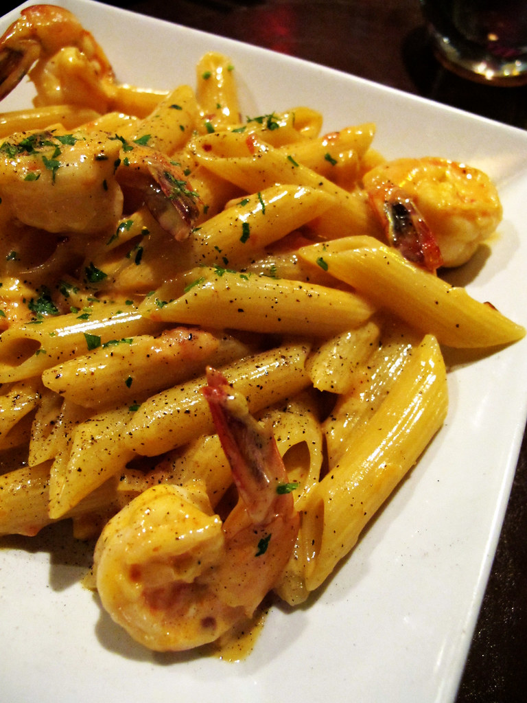

Home
Cajun Pasta

Description
Cajun shrimp pasta is a rich and flavorful dish made with tender shrimp, pasta, and a creamy Cajun-seasoned sauce. The shrimp are cooked with garlic and spices, then tossed with pasta and a smooth, savory sauce that has just the right amount of heat. It’s a comforting and satisfying meal that’s quick to make and packed with bold Cajun flavor.
Ingredients
- 1 lb shrimp (peeled and deveined)
- 8 oz pasta
- 1 tablespoon olive oil
- 2 cloves garlic, minced
- 1 cup heavy cream
- 1 tablespoon Cajun seasoning
- 1/2 cup grated parmesan cheese
- Salt and pepper
Steps
- Cook the pasta according to package instructions, then drain and set aside.
- Heat olive oil in a pan over medium heat and cook the shrimp and garlic until the shrimp turn pink.
- Add heavy cream and Cajun seasoning, then stir and let the sauce simmer for a few minutes.
- Add the pasta and parmesan cheese, mix well, and season with salt and pepper before serving.